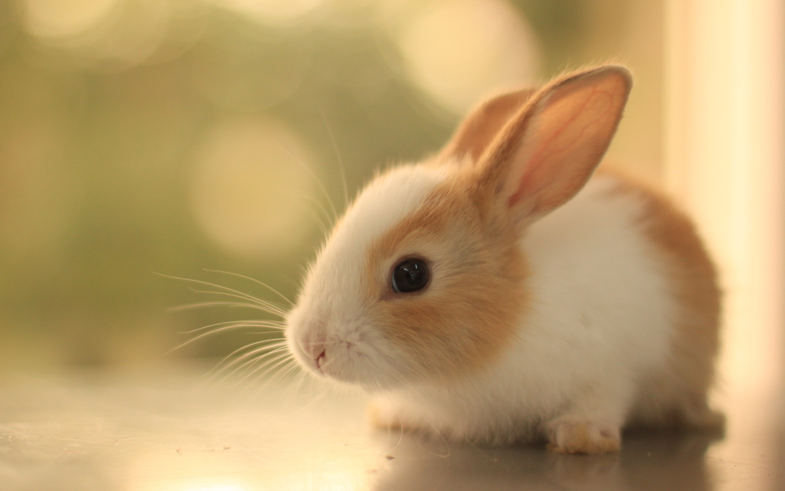
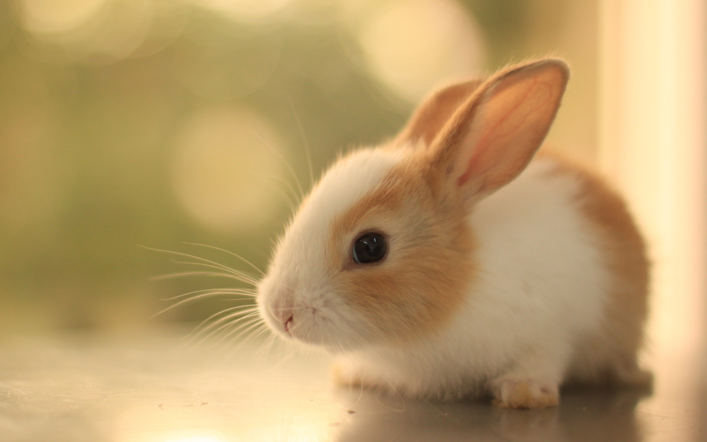

Our Animals
Our Dogs
Our Cats


Our Rabbits
 

Our Turtles

Our Fish


Adopting a pet from a our shelter brings immeasurable joy, not only to the animal but also to the adopter. When you choose to adopt, you’re giving a loving home to a pet who may have faced uncertainty and hardship. The bond that forms through adoption is truly special, as these pets often show an immense amount of gratitude and affection toward their new family. By choosing adoption, you’re not just adding a pet to your life—you’re making a life-changing difference for an animal in need. The joy of adoption goes beyond the act itself; it's about the new experiences and companionship that come with bringing a pet into your home. Sheltered animals often have unique personalities that shine through once they feel safe and loved. Whether you’re adopting a playful puppy or a calm, affectionate senior pet, they offer unconditional love and companionship that fills your home with warmth and happiness. Every tail wag, purr, or joyful jump is a reminder of the positive change you've created in their life. Adopting a pet also teaches responsibility and the rewarding nature of caring for another living being. The routine of feeding, walking, and tending to your pet’s needs not only strengthens your bond but also brings structure and purpose to your day. The sense of accomplishment in knowing you’re providing a safe, nurturing environment for a pet is unmatched. With each small act of care, your connection grows, and you witness firsthand the difference your love and attention make in their well-being.